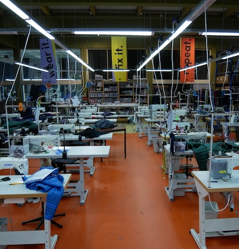
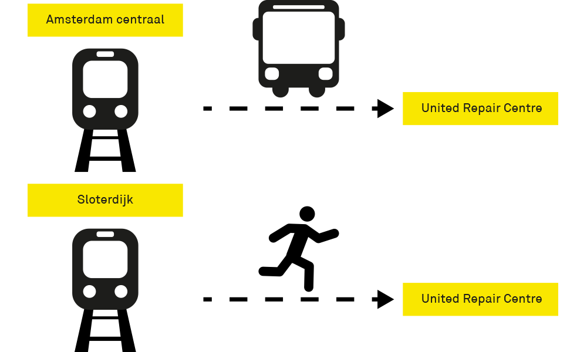
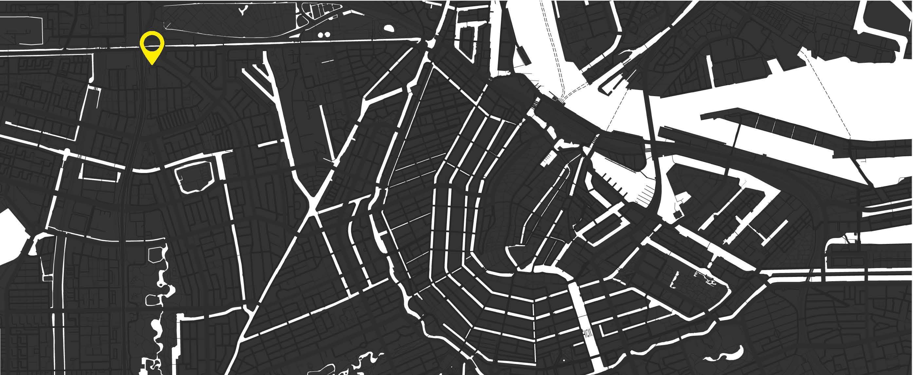
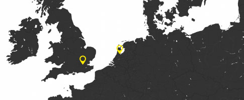

over
waarom het united repair centre
tekst
Visie
Het United Repair Centre streeft er naar om kledingmerken in Europa te helpen met hun doelstellingen om duurzamer te worden.
Dit doen zij door kledingreparatie van hoge kwaliteit aan te bieden waardoor de levenscyclus van deze kledingstukken wordt verlengd. Tegelijkertijd biedt het URC werkgelegenheid aan mensen met een vluchtelingenachtergrond.
Hoe werkt het
- Stap:1 een kledingstuk wordt verkocht
- Stap:2 het kledingstuk is veel gebruikt en moet gerepareerd worden
- Stap:3 de eigenaar van het kledingstuk benaderd het merk waar zij het hebben gekocht
- Stap:4 de eigenaar stuurt het product naar het United Repair Centre
- Stap:5 het United Repair Centre repareerd het kledingstuk
- Stap:6 Het gerepareerde kledingstuk wordt terug gestuurt naar de eigenaar
samenwerkingen
Het united Repair Centre werkt samen met verschillende bedrijven om kleding te repareren.
de bedrijven
- Patagonia
- Lululemon
- Arc'teryx
- Cortazu
- Decathlon
- Rapha
- Kathmandu
waar is het United Repair Centre?
Het United Repair Centre 15 minuutjes lopen van Station sloterdijk of 25 minuten met de bus vanaf Amsterdam Centraal.
Het United Repair Centre is te vinden op de Krelis Louwenstraat 3, 1055 KA Amsterdam
Buiten de Nederlandse vestiging is er kort geleden een nieuwe locatie geopend in Londen
